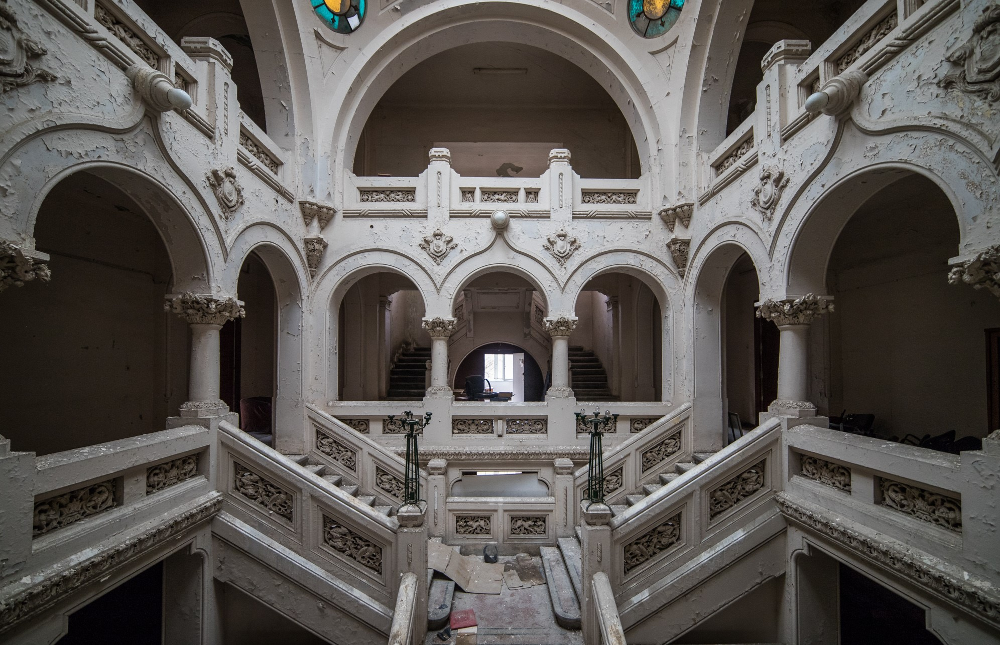

Urban Exploring , deseori prescurtat Urbex, este explorarea cladirilor sau structurilor facute de oameni, de cele mai multe ori abandonate. De multe ori, acest hobby implica incalcarea proprietatii.
Locuri vizitate de mine:

Institutul de Chimie Alimentara Bucuresti
×

Moara lui Assan